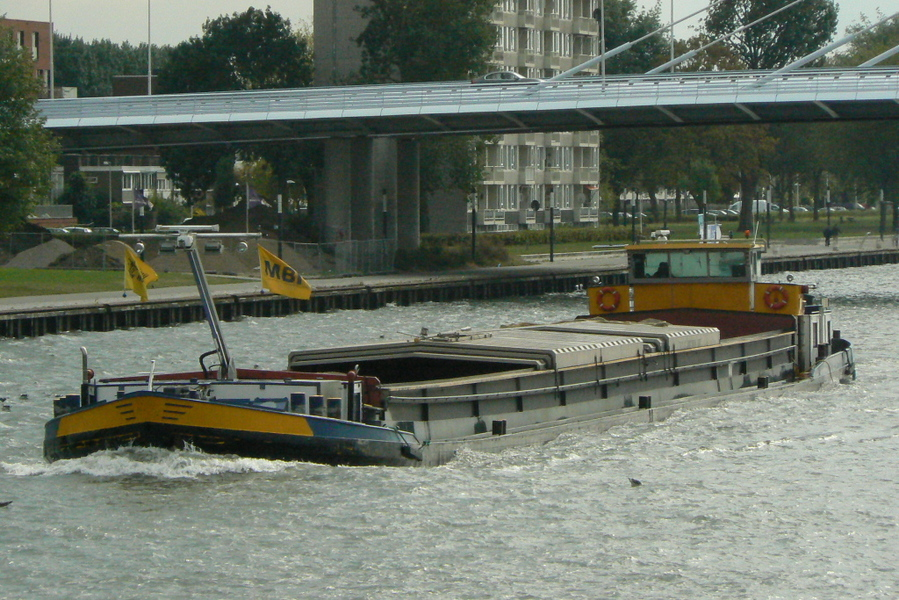
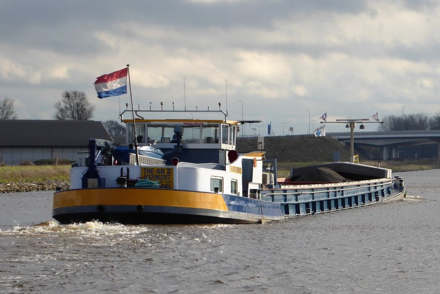
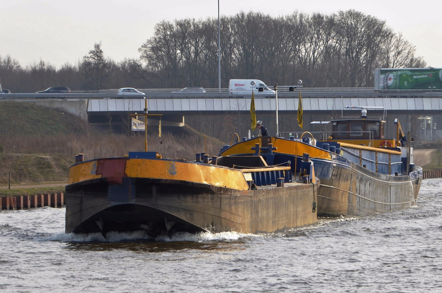
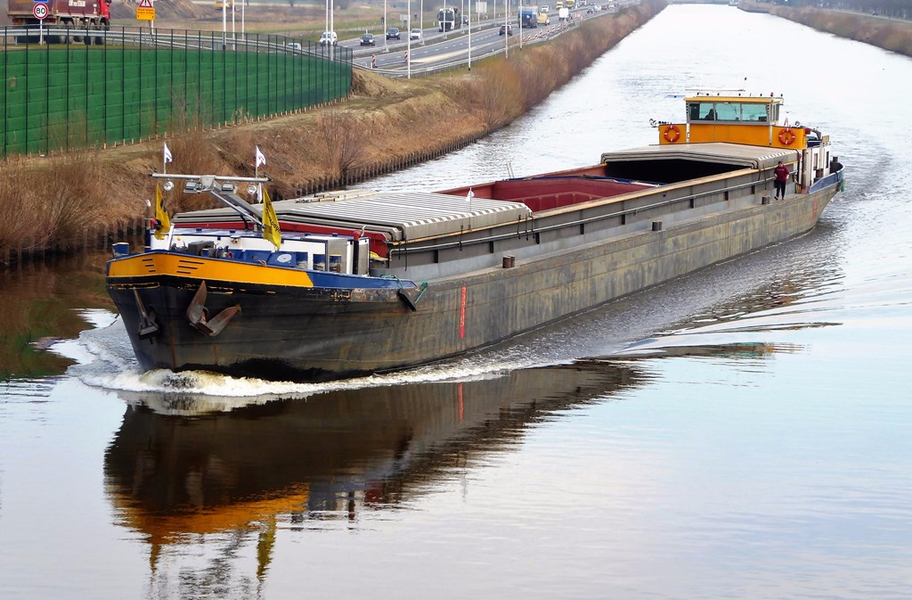
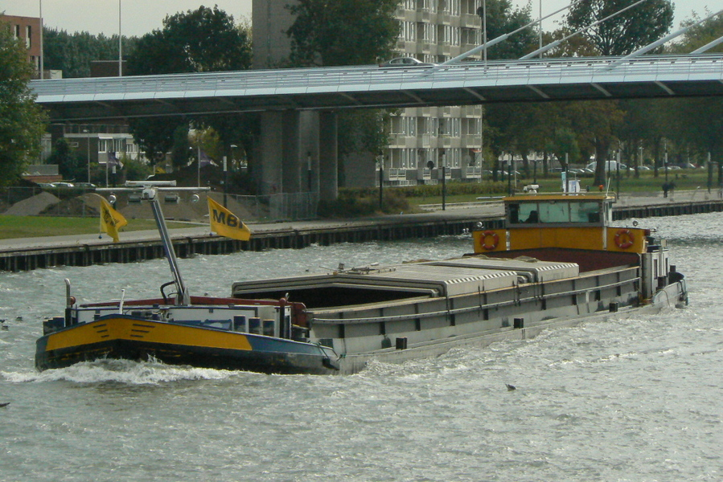
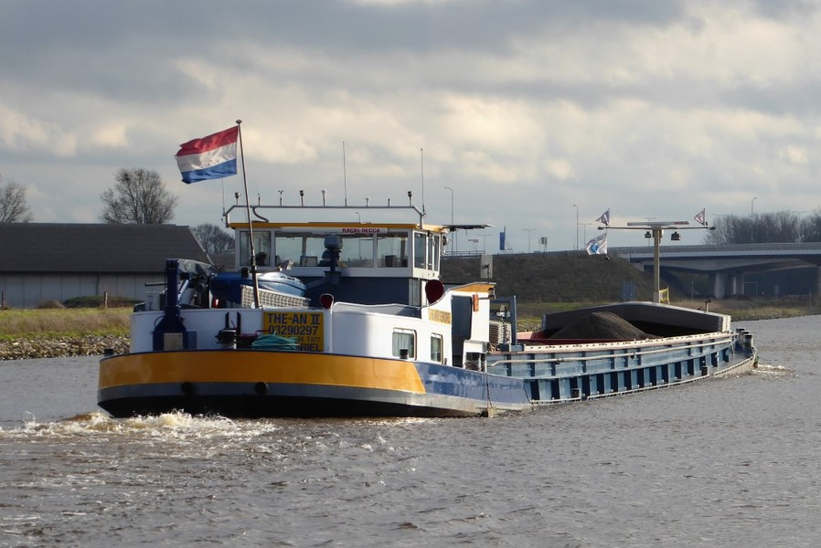
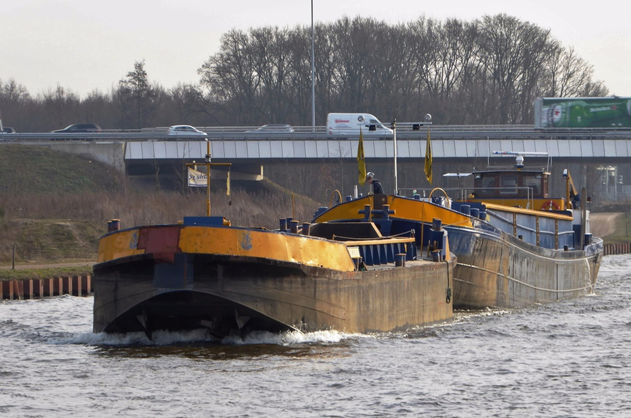
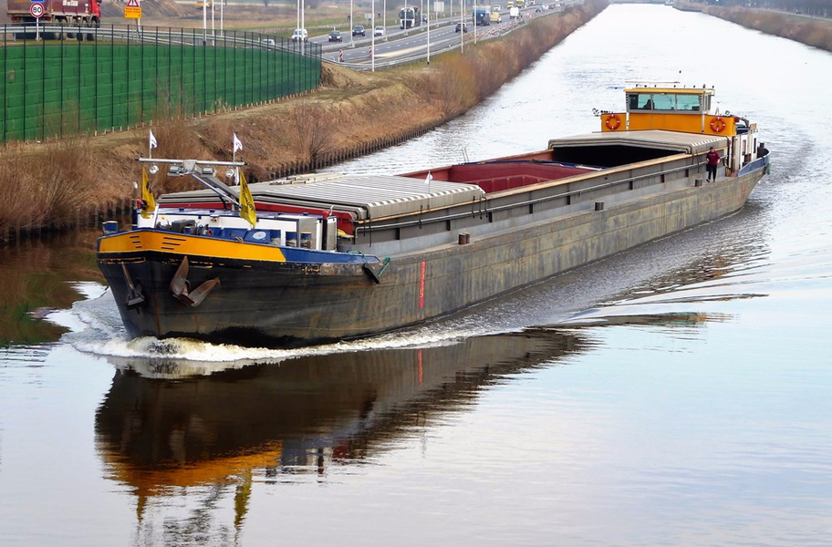

Bart van de Poll
Applicatie media ontwikkelaar

1 jaar
8-2013 tot 1-2014
1-2015 tot 7-2017
2008 tot 2012
2012 tot 2014
2017 tot heden
 







bartvandepoll@hotmail.com
+31652301763
merellaan 4, 3161 TH, Rhoon